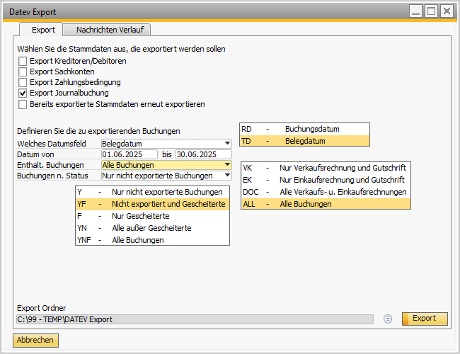
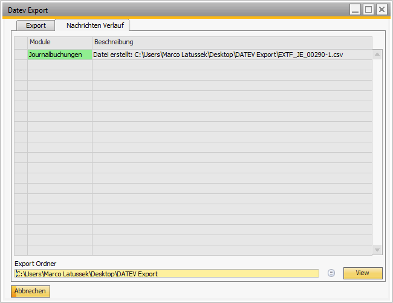

DATEV-Buchungsexport (DATEV Export)
Überblick
Das Versino DATEV Export Modul ist die zentrale Schnittstelle für den Export von SAP Business One Daten in das DATEV-Format. Es ermöglicht den vollständigen Datenaustausch, einschließlich Buchungen, Stammdaten (Debitoren, Kreditoren, Sachkonten) und Zahlungsinformationen, und ist speziell für deutsche Buchhaltungsanforderungen optimiert.
Zugang zum Modul: Sie finden den Export-Dialog unter Versino Financial Suite > DATEV Export. Die Export-Protokolle können unter Versino Financial Suite > Protokolle > Export Log eingesehen werden.
Vorteile des Moduls
- Umfassende Datenintegration: Exportiert nicht nur Journalbuchungen, sondern auch alle relevanten Stammdaten und Zahlungsbedingungen für eine vollständige Datenübergabe.
- Intelligente Status-Verwaltung: Verhindert durch eine automatische Statusverfolgung für jede Buchung effektiv Doppel-Exporte und sichert eine lückenlose Nachverfolgung.
- Qualitätssicherung: Detaillierte Protokollierung, Validierung vor dem Export und eine transparente Fehlerbehandlung sichern die Datenqualität.
Hauptfunktionen
Umfassender Datenexport
Das Modul exportiert nicht nur Journalbuchungen, sondern auch alle relevanten Stammdaten, um eine vollständige Datenübergabe an Ihren Steuerberater zu gewährleisten:
- Journalbuchungen
- Debitoren- und Kreditorenstammdaten
- Sachkontenbeschriftungen
- Zahlungsbedingungen
Unterstützte Buchungstypen
Das Modul nutzt spezialisierte Exporter für die unterschiedlichen Buchungstypen aus SAP Business One:
- Journalbuchungen — Einzelbuchungen ohne Besonderheiten
- Ausgangsrechnungen (VKRE) und Ausgangsgutschriften (VKGS)
- Eingangsrechnungen (EKRE) und Eingangsgutschriften (EKGS)
- Anzahlungsrechnungen für Verkauf und Einkauf
- Eingangs- und Ausgangszahlungen
- Wareneingänge (EKWE) und Lieferungen (VKLS)
- Retouren für Ein- und Verkauf
- Lagerbuchungen (Inventur, Umlagerungen, Bestandsneubewertungen)
- Produktionsaufträge, Abstimmungen, Scheckeinreichungen
- Service-Buchungen und Stornobuchungen (mit spezieller Behandlung)
Export-Status-System
Jede Buchung erhält einen Status, der direkt in der Journalbuchung angezeigt wird:
- Y — Erfolgreich exportiert
- N — Noch nicht exportiert
- E — Vom Export ausgeschlossen
- F — Export fehlgeschlagen
Der Status kann jederzeit manuell über einen separaten Dialog geändert werden, um z. B. einen erneuten Export zu ermöglichen.
Detaillierte Filtermöglichkeiten
Für den Buchungsexport stehen umfangreiche Filter zur Verfügung. Beim Buchungsstatus-Filter können Sie wählen zwischen:
- Nur nicht exportierte
- Nicht exportierte und fehlgeschlagene
- Nur fehlgeschlagene
- Alle außer fehlgeschlagenen
- Alle Buchungen
Protokollierung und Monitoring
Alle Export-Vorgänge werden detailliert in einem Protokoll-Tab aufgezeichnet, mit farbcodierten Meldungen (Erfolg, Warnung, Fehler) und Aufschlüsselung nach Modul-Kategorien (Allgemein, Debitoren/Kreditoren, Sachkonten, Zahlungen, Journalbuchungen).
Export-Dateien (DATEV-Standard)
Der Export erzeugt CSV-Dateien gemäß DATEV-Standard mit Semikolon als Feldtrenner:
Erzeugte Dateien
- EXTF_Buchungsstapel.csv — Hauptdatei mit allen Buchungszeilen (über 100 Felder pro Zeile)
- EXTF_Debitoren.csv — Kundenstammdaten
- EXTF_Kreditoren.csv — Lieferantenstammdaten
- EXTF_Kontenbeschriftungen.csv — Sachkonten
- EXTF_Zahlungsbedingungen.csv — Zahlungskonditionen
Alle Dateien beinhalten den DATEV-Versions-Header und sind direkt in DATEV-Programmen importierbar.
Integration mit anderen VPS-Modulen
VPS Buchungstext-Konfigurator (JeTextSetter)
Der JeTextSetter erzeugt einheitliche, aussagekräftige Buchungstexte. Diese verbessern die Lesbarkeit der DATEV-Dateien erheblich und reduzieren Rückfragen vom Steuerberater. Texte werden automatisch an DATEV-Längenbegrenzungen angepasst und Sonderzeichen vermieden.
VPS Pro-Rata
Pro-Rata-Abgrenzungsbuchungen werden vom DATEV-Export speziell behandelt: automatische Erkennung als Abgrenzungsbuchungen, korrekte Referenzierung zum Originalbeleg und optimierte DATEV-Klassifizierung.
VPS Hauptmodul (Konfiguration)
DATEV-Mandantennummer, Beraternummer, Kontenlänge und Kontenplan werden zentral im Hauptmodul konfiguriert und vom Export automatisch übernommen.
Anwendung: Schritt-für-Schritt
Buchungen und Stammdaten exportieren
- Navigieren Sie zu Versino Financial Suite > DATEV Export.
- Wählen Sie die zu exportierenden Datentypen (z. B. Journalbuchungen, Debitoren/Kreditoren).
- Definieren Sie den gewünschten Zeitraum und den Datumstyp (Buchungsdatum oder Belegdatum).
- Setzen Sie den Filter bei "Buchungsstatus" auf "Nur nicht exportierte", um Duplikate zu vermeiden.
- Wählen Sie das Zielverzeichnis für die Export-Datei aus.
- Klicken Sie auf "Export starten". Die Buchungen werden exportiert und in SAP B1 automatisch als "exportiert" (Status Y) markiert.

Export-Protokoll überprüfen
Wechseln Sie nach dem Export zum Protokoll-Tab. Hier sehen Sie eine detaillierte, farbcodierte Aufzeichnung aller Vorgänge und können eventuelle Fehlermeldungen analysieren.

Export-Status manuell ändern
Öffnen Sie die betroffene Journalbuchung in SAP Business One. Im Reiter "Financial Suite" können Sie den Export-Status manuell anpassen, z. B. um einen erneuten Export zu ermöglichen oder eine Buchung gezielt vom Export auszuschließen (Status E).
Tipps und Fehlerbehandlung
Tipps für die tägliche Arbeit
- Export-Strategie: Führen Sie regelmäßige Exporte durch (z. B. monatlich), um die Datenmengen überschaubar zu halten. Nutzen Sie aussagekräftige Export-Pfade zur besseren Organisation.
- Qualitätsprüfung: Prüfen Sie nach jedem Export das Protokoll auf Warnungen oder Fehler. Validieren Sie Exporte mit kleinen Zeiträumen, bevor Sie große Datenmengen verarbeiten.
- Status-Verwaltung: Nutzen Sie die Status-Filter gezielt. Um einen fehlerhaften Export zu korrigieren, können Sie den Status manuell auf N zurücksetzen und nur die fehlgeschlagenen Buchungen erneut exportieren.
- JeTextSetter aktivieren: Vor dem Export aktivieren Sie idealerweise das JeTextSetter-Modul für einheitliche, DATEV-optimierte Buchungstexte.
Häufige Probleme und Lösungen
Problem: Export schlägt mit einem Validierungsfehler fehl.
Lösung: Prüfen Sie das Protokoll auf Details. Häufige Ursachen sind geschlossene Buchungsperioden, fehlende Konten- oder Steuerzuordnungen oder inkonsistente Kontenpläne. Analysieren Sie die Fehlermeldung im Protokoll-Tab.
Problem: Die erstellten Export-Dateien sind unvollständig oder fehlerhaft.
Lösung: Stellen Sie sicher, dass Sie Schreibrechte für das gewählte Export-Verzeichnis haben und genügend Speicherplatz vorhanden ist. Überprüfen Sie den Export-Zeitraum und die CSV-Struktur.
Problem: Der Export-Status wird bei einer Buchung nicht aktualisiert.
Lösung: Überprüfen Sie Ihre Benutzerberechtigungen für das Ändern von Journalbuchungen. Stellen Sie sicher, dass das Add-On korrekt installiert ist. Im Notfall kann der Status manuell in der Journalbuchung geändert werden.
Problem: Bestimmte Buchungstypen werden nicht exportiert.
Lösung: Überprüfen Sie die Buchungstyp-spezifischen Exporter. Stellen Sie sicher, dass alle erforderlichen Daten (z. B. Kontierung, Steuersatz) vorhanden sind, und prüfen Sie die Konfiguration für spezielle Buchungsarten.
Problem: Der Export-Dialog öffnet sich nicht.
Lösung: Überprüfen Sie Ihre Benutzerberechtigungen für das Modul. Stellen Sie sicher, dass die Financial Suite korrekt geladen wurde und der Menüpunkt aktiv ist.